Amsterdams Woordenboekkie
Een woordenboek met analoog ontworpen woorden/spreekwoorden.
Gedrukt op een RISO machine.

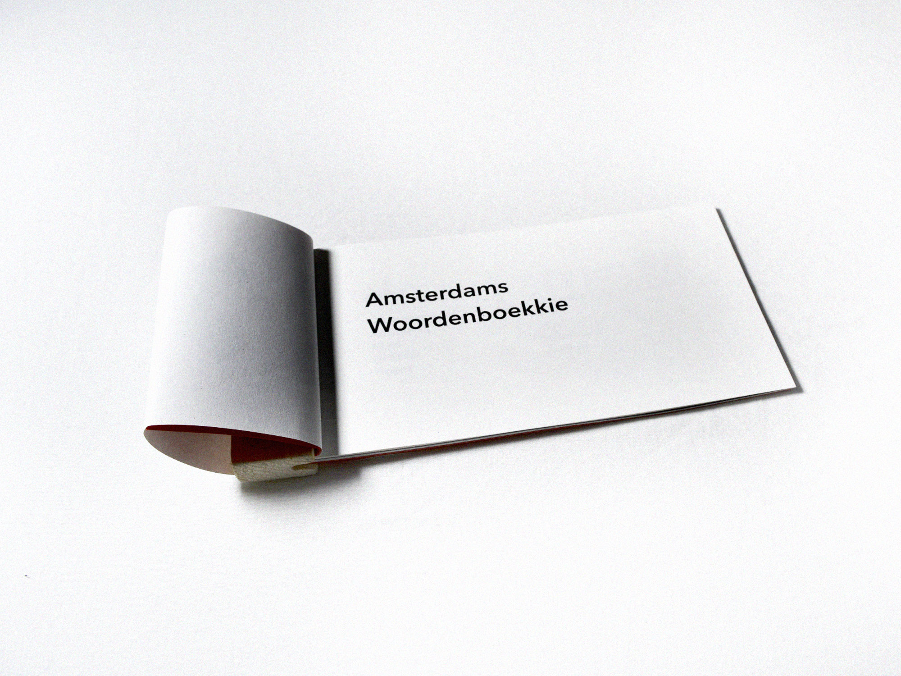
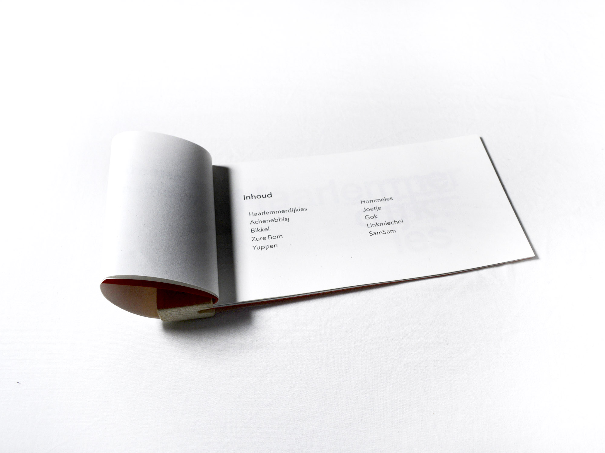
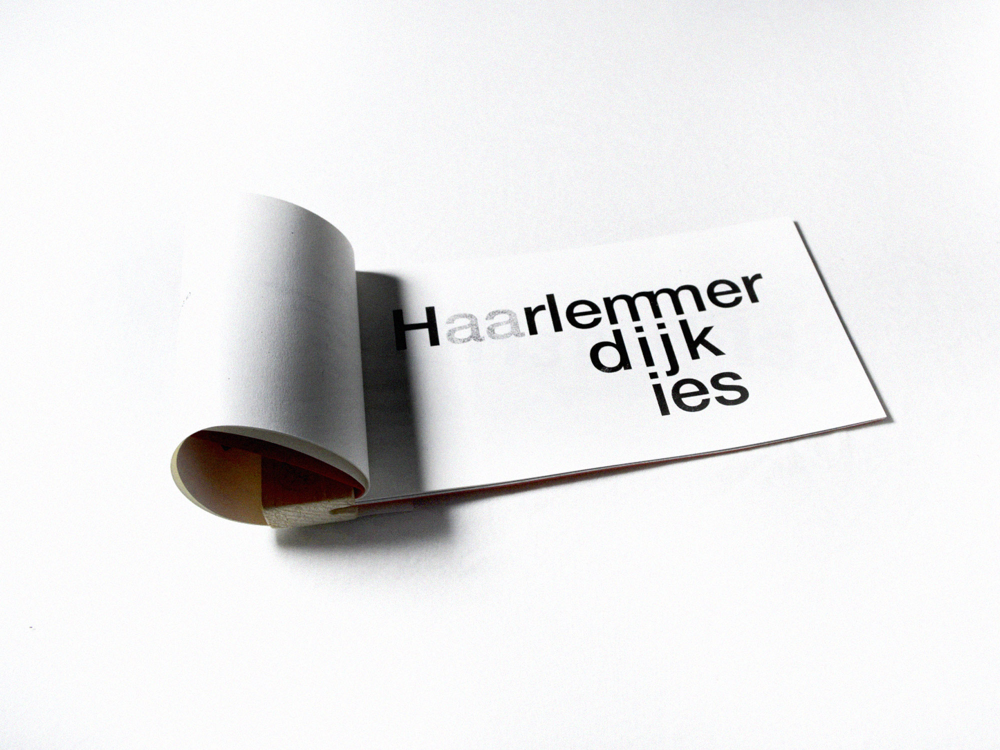
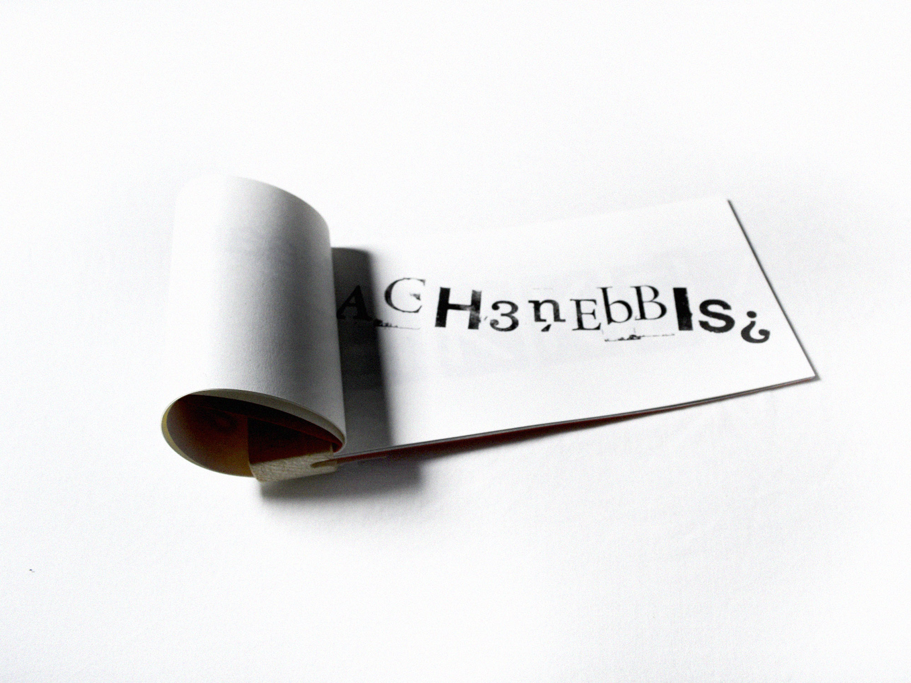
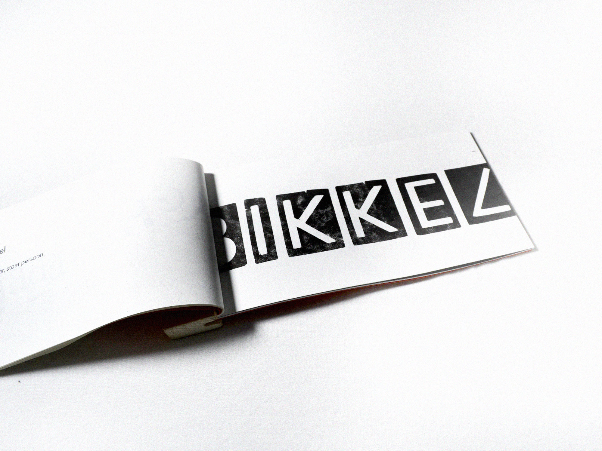
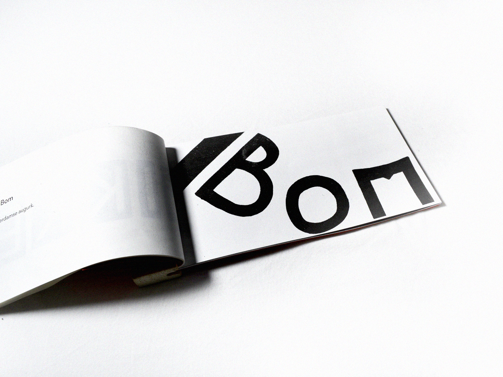
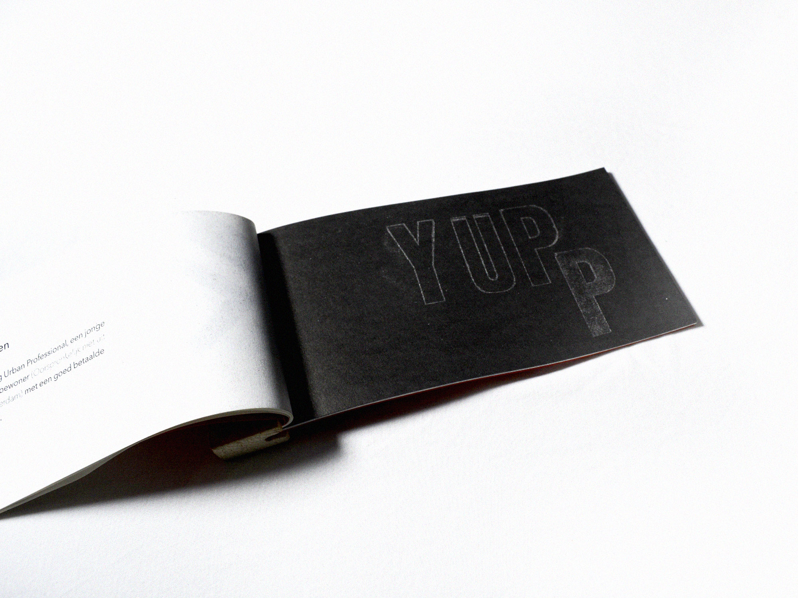
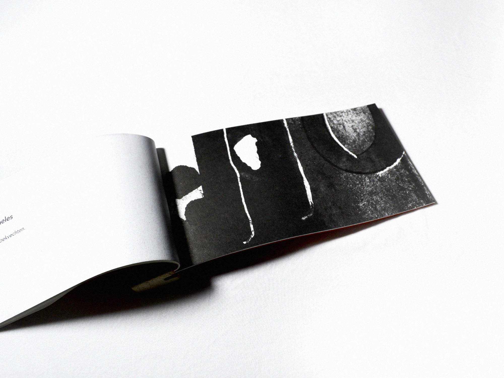
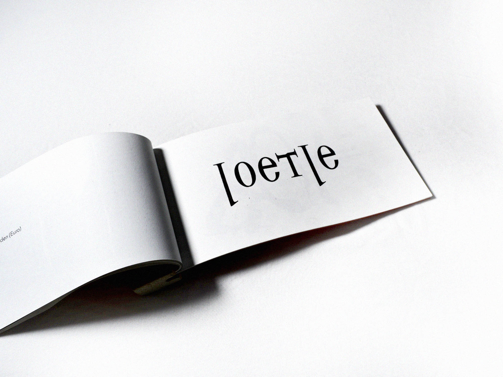
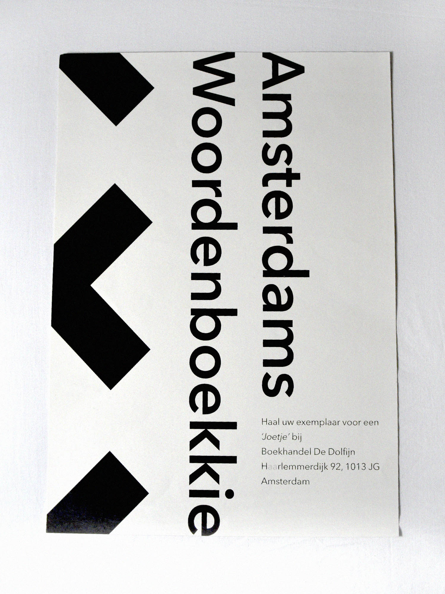
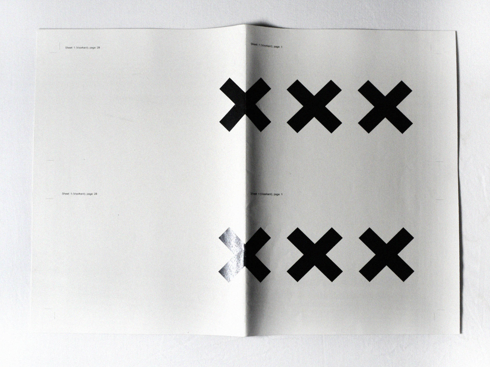
Een woordenboek met analoog ontworpen woorden/spreekwoorden.
Gedrukt op een RISO machine.